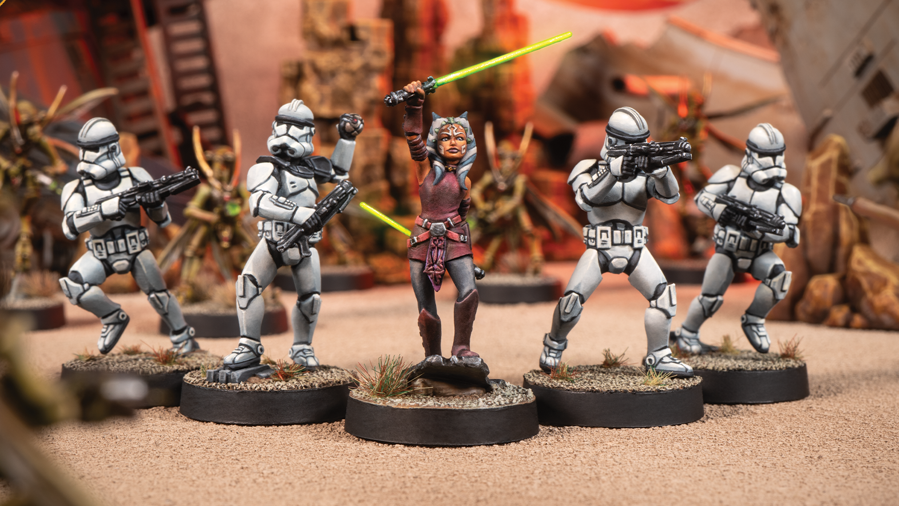

Jogos com Miniaturas
Warhammer 40k
Warhammer 40k é um dos jogos de miniaturas mais populares do mundo, ambientado em um universo de ficção científica futurístico, sombrio e violento. Neste universos, diversas facções travam batalhas brutais e constantes por dominação ou sobrevivência. Além do combate tático, o jogo possui uma histórica muito rica e profunda, com uma atmosfera sombria de guerra constante.

Dungeons & Dragons
Dungeons & Dragons (DnD) é o RPG de fantasia mais conhecido e influente, onde jogadores assumem papéis de personagens únicos e exploram mundos imaginários cheios de magia, monstros e mistérios. Guiados por um mestre de jogo, os participantes criam histórias colaborativas, enfrentam desafios e tomam decisões que influenciam o desenrolar da aventura, tudo isso com o uso de dados para definir resultados e ações.A utilização de miniaturas não é essencial para se jogar, mas ajuda a criar um envolvimento e dinâmica nas sessões.

Star Wars: Legion
Ambientado no universo épico de Star Wars, é um jogo de estratégia que permite os jogadores recriarem batalhas icônicas entre o Império Galáctico e a Aliança Rebelde. O jogo combina táticas militares com o uso de personagens famosos da saga, proporcionando partidas emocionantes que misturam estratégia, narrativa e colecionismo.
